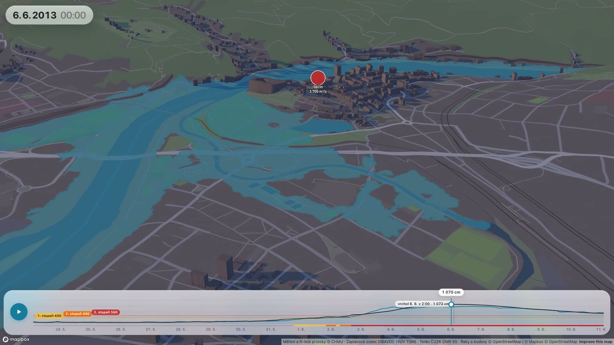
Tohle je Děčín v červnu 2013. Voda stoupá hodinu po hodině, až k domům.
Den předem víme, kam v Děčíně dosáhne voda
18h
3. stupeň v Děčíně hlášen 18 hodin předem
Snímek: Děčín v červnu 2013, rozliv ze změřené hladiny hodinu po hodině.
Jen z balíčku by to nešlo: bereme 20 let a 12 stanic proti proudu
Jen s daty z balíčku by model nefungoval

- 20let, 2006–2025
- 12stanic
- 175 320hodin měření
Bereme jen řeku, počasí nepomohlo
14 veličin × 7 časů
98čísel
Co se stane s chybou, když přidáme další vstup
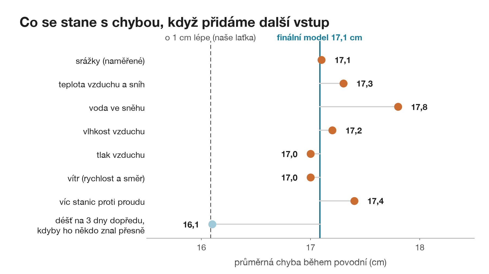
Čtyři modely, vyhrál nejjednodušší
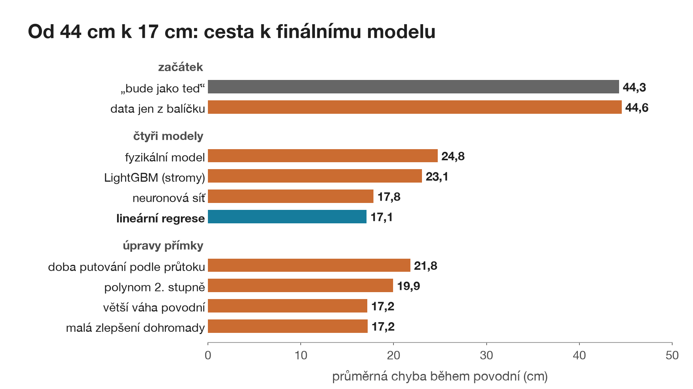
Voda v Děčíně je součet řek
198cm
Vydáno 14. 9. 2024 11:00 na 15. 9. 11:00
- průměrná hladina198
- Děčín a Ústí+80
- Vltava+89
- horní Labe+116
- Mělník+96
- Ohře−2
Model varoval. Skutečnost 551 cm, 3. stupeň přišel o 3 h později.
Ověřeno třikrát na povodních, které model neviděl
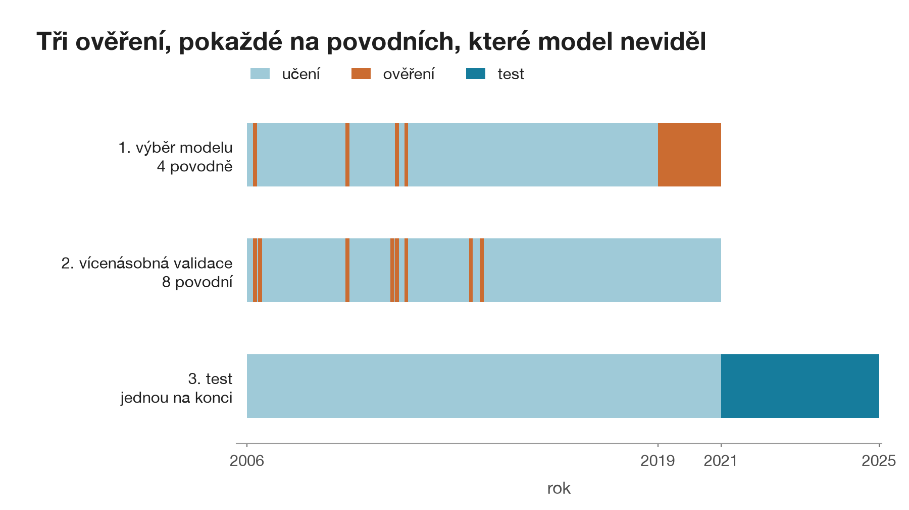
- Výběr modelu4 vynechané povodně
- Vícenásobná validace8 povodní, každá jednou
- Test 2021–2025jednou, na konci
Dělení v čase, nikdy náhodně.
Na všech povodních o polovinu menší chyba, Boris 27 hodin předem
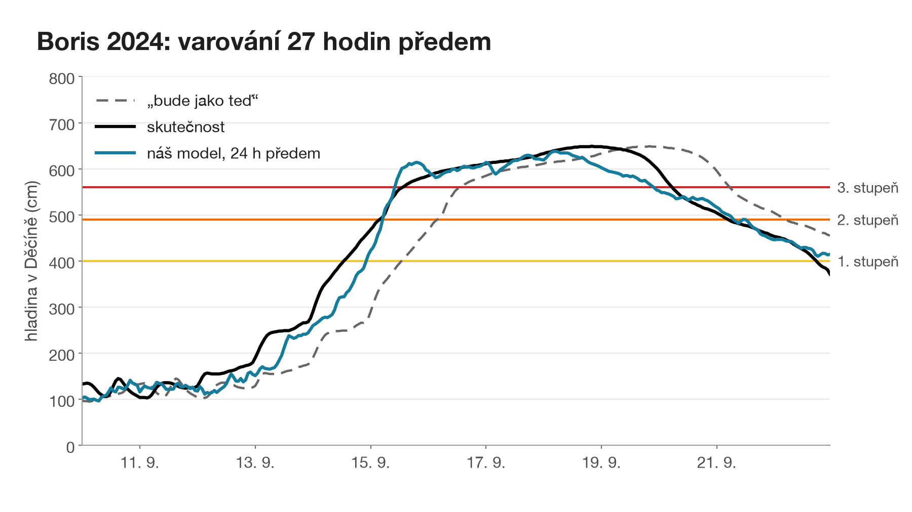
Povodeň 2013, největší v datech, model učený bez ní: 3. stupeň 18 h předem, vrchol 952 cm proti 1 072.
27h
před 3. stupněm v Děčíně, Boris
−55%
test 22,4 proti 50,2 cm
vícenásobná validace 20,1 proti 45,2 cm

Z předpovědi mapa: kam až voda dosáhne
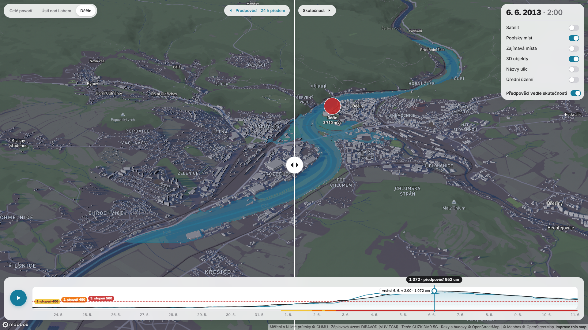
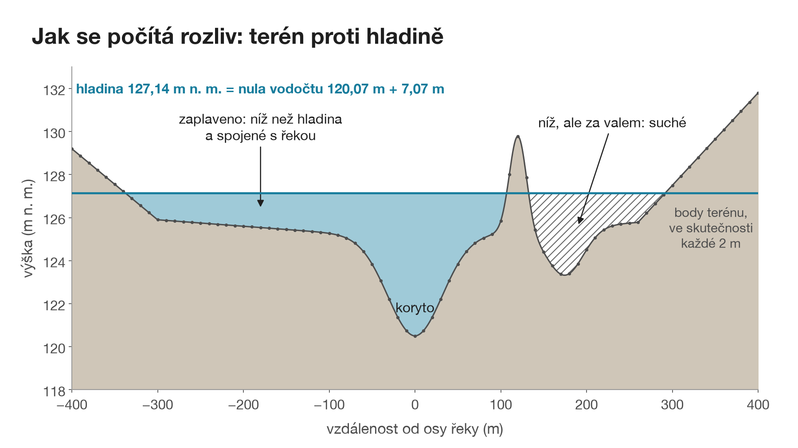
Otevřít živou mapuVýška terénu proti výšce hladiny, shoda s úřední mapou 82 až 90 %. Děčín 6. 6. 2013, 1 072 cm.
field-zero.netlify.appživě, každou hodinu nová předpověď
Co neumíme a co dál
Na 36 h je chyba skoro dvakrát větší. Vrchol vyšší, než jaký model kdy viděl, podhodnotí.
Přívalové povodně na malých přítocích, jako je Ploučnice nebo Bílina.
Předpověď počasí na 2 až 3 dny: u povodně 9/2010 by chyba na 72 h klesla o 40 %. Archiv starých předpovědí ale není.
Z otevřených dat zdarma: o povodni v Děčíně víte den předem, s modelem, který se vejde na jeden obrázek.
Mapy © Mapbox, © OpenStreetMap · terén ČÚZK · záplavová území DIBAVOD · data ČHMÚ
Proč jen lineární regrese?
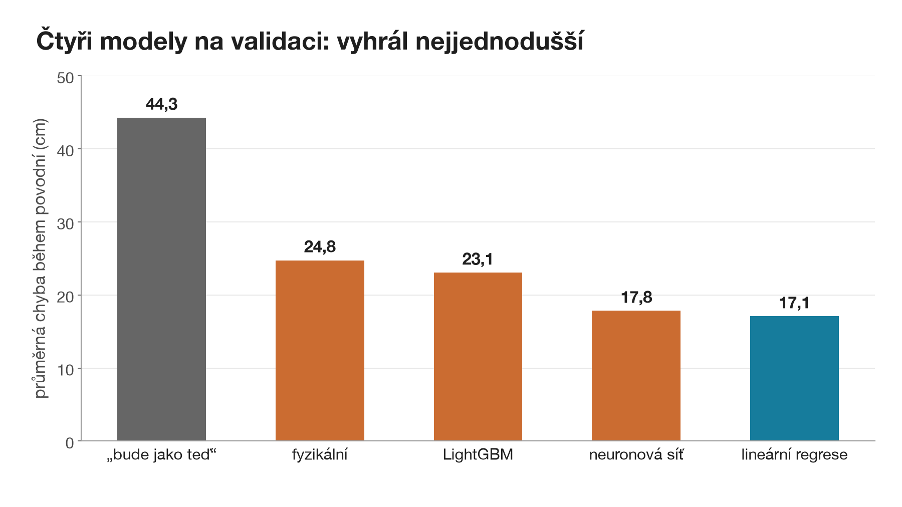
Na povodních, které model neviděl, vyšla nejlíp, a každou váhu vysvětlíme fyzikálně.
Co znamená „bude jako teď“?
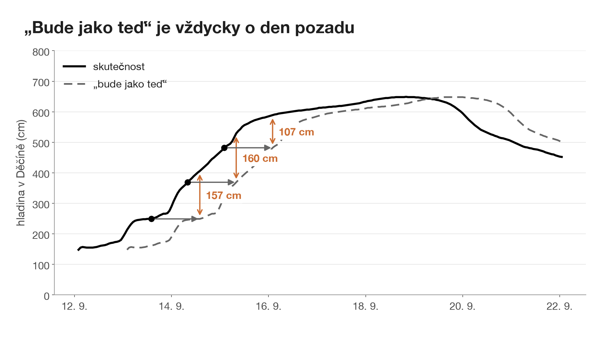
Předpověď, že hladina za 24 h bude stejná jako teď; při povodni o den pozadu.
Proč ne srážky?
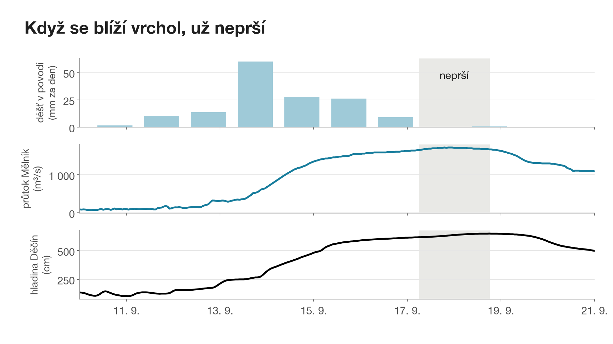
I s dokonalou předpovědí deště na 3 dny klesla chyba jen o 1 cm.
Jak moc se pletete?
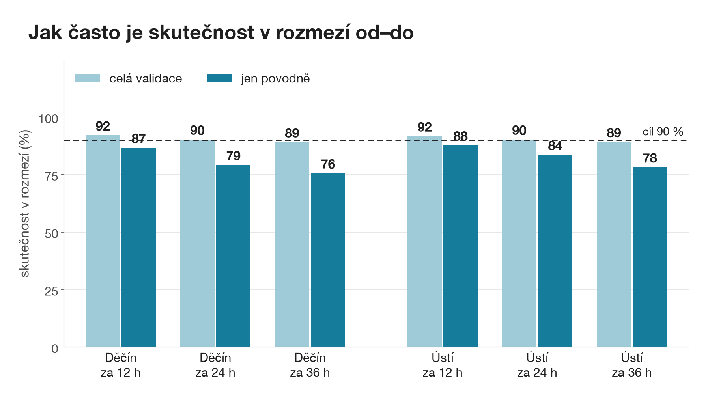
Do rozmezí od–do se vejde 8 až 9 z 10 hodnot.
Funguje to i na jiné povodni?
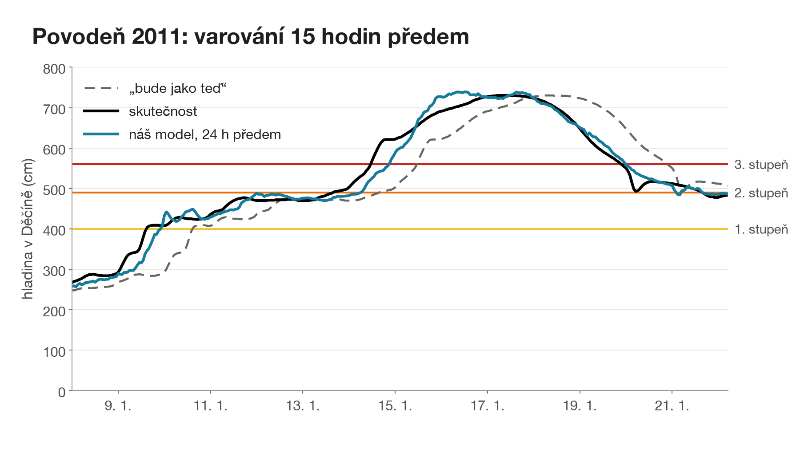
Leden 2011, validační povodeň: 3. stupeň hlášen 15 hodin předem.
Podle čeho model rozhoduje?
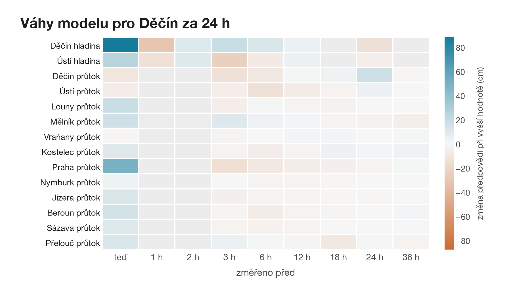
Váhy lineární regrese pro předpověď hladiny v Děčíně za 24 hodin: každé políčko je váha jednoho vstupu, modrá předpověď zvedá, oranžová snižuje (Děčín teď +88 cm, Praha teď +49 cm). Prázdná políčka jsou vstupy, které model nemá.
Je rozliv hydraulický model? Není.
Výška terénu proti výšce hladiny, ověřená proti úřední mapě záplavových území.
- 167 hanáš rozliv při pětileté vodě
- 183 haúřední mapa (DIBAVOD)
- 165 haprůnik, shoda 0,89
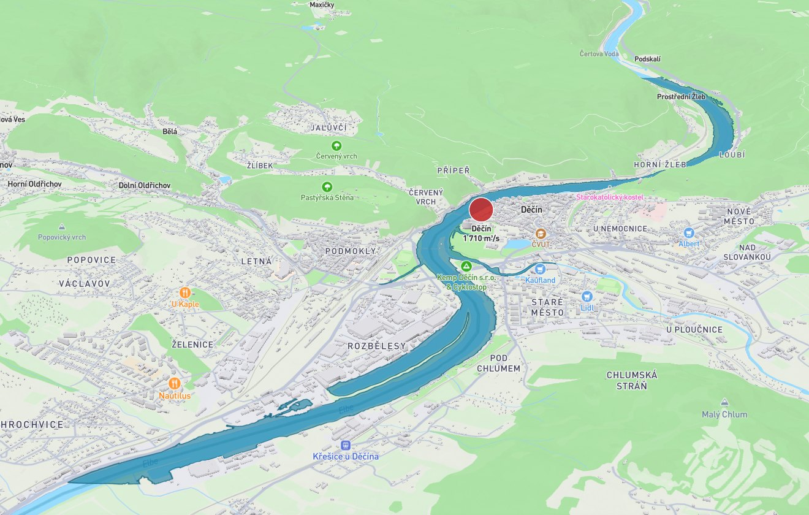
Jak dopadl test?
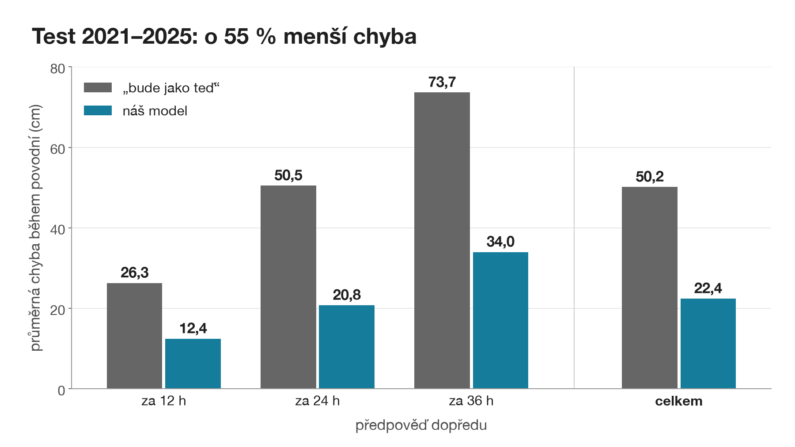
Jednou, na konci, na model vybraný předem: 22,4 cm proti 50,2, před 3. stupněm varoval pokaždé.
Proč jen 36 hodin dopředu?
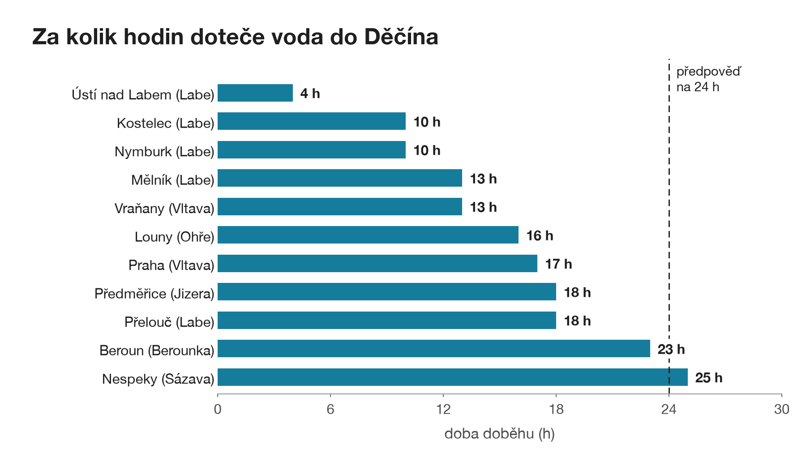
Z nejvzdálenějších stanic doteče voda za 23 až 25 h; co přijde později, ještě neprotekla žádnou stanicí.
Jak vypadá aplikace dnes?
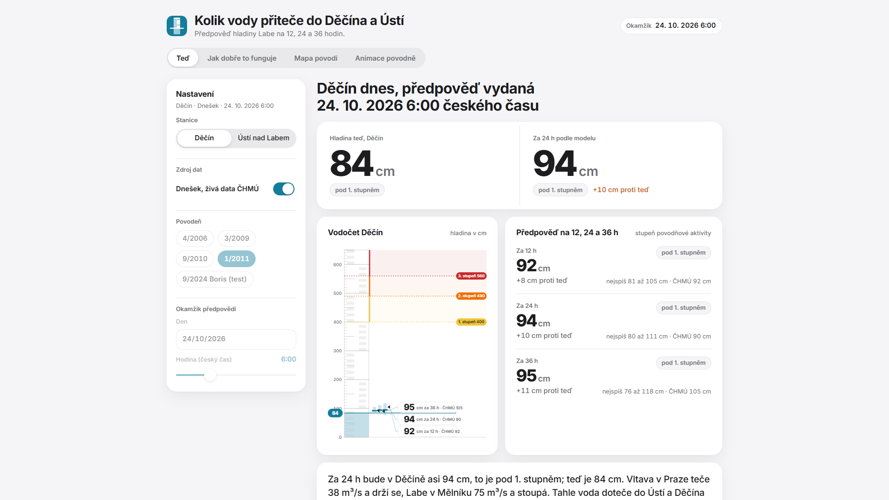
Otevřít aplikacifield-zero.netlify.app: živá data ČHMÚ, předpověď na 12, 24 a 36 h s rozmezím a vedle oficiální předpověď ČHMÚ.
Proč je předpověď křivka, když je to lineární regrese?
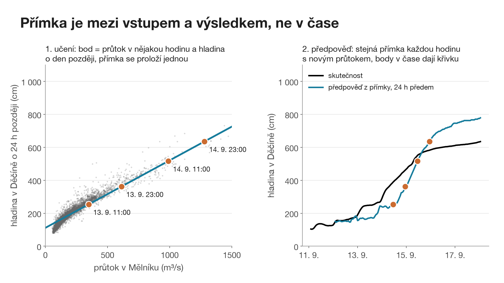
Přímka je vztah mezi vstupem a hladinou, ne tvar v čase; když se do ní každou hodinu dosadí nový průtok, vznikne křivka.
Jak je to s přímkou, když je vstupů 98?
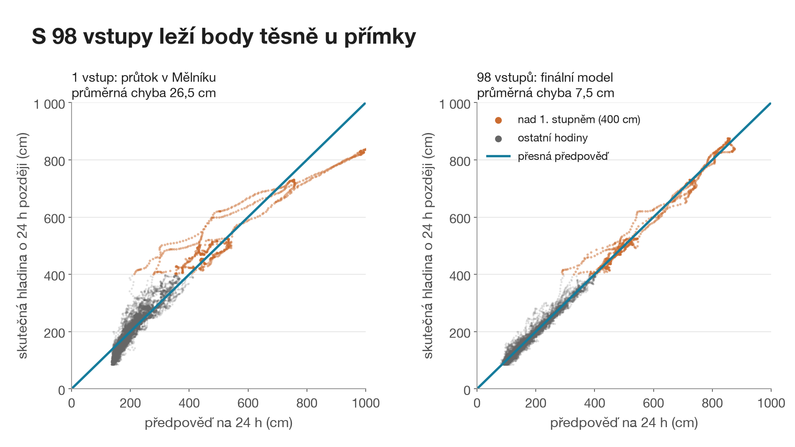
S 98 vstupy je model vážený součet; předpověď proti skutečnosti leží těsně u úhlopříčky, chyba 7,5 cm místo 26,5 s jedním vstupem.